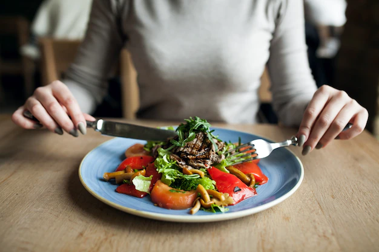

Nutrição: O que é? E qual sua Importância?
A nutrição pode ser definida de duas formas de acordo com a literatura, uma é o ato de aquisição de nutrientes pelos seres vivos, isso ocorre por um processo biológico, em que através dos alimentos os seres obtém energia para realização
de suas rotinas vitais. Em outra definição a nutrição é tratada como a ciência que relaciona o alimento à saúde e às doenças [Wardlaw e Smith,2013].
Além de nos fornecer energia a nutrição tem papel fundamental em nossa
saúde física e mental. Uma má alimentação pode causar o desenvolvimento de diversas doenças como, diabetes, colesterol alto, hipertensão entres outras.
Uma boa alimentação deve ser composta por uma gama variada de alimentos,
mesclando nas proporções corretas, carboidratos, proteínas, gorduras, vitaminas e minerais. Na dúvida de como escolher os alimentos certos e quantidade adequada para cada indivíduo, baseado em suas atividades e tipo biológico,
o ideal é sempre procurar um profissional da área como, um nutricionista ou nutrólogo.
Conheça os segredos da dieta flexível
Já pensou em como seria alcançar a boa forma sem precisar se submeter a uma dieta extremamente restritiva? Ela existe e o nome dela é dieta flexível. Entendendo a dieta flexível
Conhecida como Dieta flexível ou IIFYM (If
it fit your macros), que significa, literalmente “Se isso cabe nos seus macros”, ou seja, essa dieta calcula a quantidade de macronutrientes, como proteínas, gorduras, carboidratos e fibras que uma pessoa pode ingerir por dia
e, assim, estabelece as quantidades de calorias que devem ser ingeridas para que a pessoa alcance seus objetivos. A IIFYM é baseada na substituição de alimentos com as mesmas propriedades calóricas, no entanto, com valores
nutricionais diferentes. Para tanto, para que essa substituição seja feita de forma eficaz, é essencial conhecer os grupos alimentares (carboidratos, gorduras, proteínas e fibras), bem como as calorias e propriedades nutricionais
de cada alimento, para que a troca se adeque a quantidade de macronutrientes necessárias na alimentação individual. Por exemplo: • 2 fatias de pão integral equivalem a 5 colheres de sopa de arroz. • 1 fruta equivale a 1 fatia
de pão integral. Para estabelecer a quantidade de macronutrientes necessários, é preciso se submeter a uma avaliação física, que considera peso, altura, atividades praticadas e, sobretudo, os objetivos, afinal de contas, esse
tipo de dieta pode ser utilizado tanto para perda de peso, quanto para o ganho, tudo depende da forma como será elaborada. Vamos conhecer as vantagens e desvantagens de adotar adieta flexível? Como o próprio nome já diz, esse
tipo de dieta possibilita mais flexibilidade no consumo dos alimentos, sendo possível a ingestão de doces, frituras e gorduras. Por isso mesmo, ela apresenta vantagens e desvantagens: Vantagens:
Desvantagens:
Hoje, sabemos que com uma dieta adequada às suas necessidades, é possível equilibrar o organismo e maximizar os resultados na busca da boa forma. A dieta flexível pode ser adaptada para diferentes objetivos, tanto para perda de peso, quanto para o ganho e até para quem objetiva manter o corpo.
Benefícios de incluir o peixe na alimentação
Os peixes constituem fontes de aminoácidos essenciais, bem como retinol, ferro, zinco, vitamina D, vitamina E, cálcio, iodo, selênio e elevadas quantidades de ômega 3. “Sendo assim, o benefício do peixe está associado a proteção
contra doenças cardiovasculares e AVCs. Além disso, estudos apontam que seu consumo também está relacionado a diminuição de incidência de depressão e até mesmo câncer”, afirma Gabriela. Quais são as informações nutricionais
dos peixes mais comuns? Entre os peixes mais comuns podemos destacar: Salmão Conhecido pela sua quantidade de ômega 3, o salmão também possui vitamina D em sua composição, enriquecendo a nossa alimentação em nutrientes e benefícios.
Um filé de salmão sem pele, fresco e cru de 100g contém:
| 170 | kcal |
| 19,3g | proteínas |
| 9,7g | lipídeos |
| 0g | carboidratos |
Atum Esse peixe é rico em ferro, proteína, sódio, fósforo, niacina, selênio, vitamina B6, vitamina B12 e ômega 3, um ácido graxo essencial. Um filé de atum de 100g, por exemplo, contém:
| 118 | kcal |
| 25,7g | proteínas |
| 0,9g | lipídeos |
| 0g | carboidratos |
Cação O cação é um peixe que oferta proteína, fósforo e vitaminas do complexo B. Uma posta de cação de 100g contém:
| 83 | kcal |
| 17,9g | proteínas |
| 0,8g | lipídeos |
| 0g | carboidratos |
Pequenas alterações podem fazer a diferença na sua dieta!
Quando se fala em nutrição saudável, sempre esperamos um grande rito de mudanças alimentares e restrições. Porém a regra “um passo de cada vez" é muito importante. Pequenos hábitos podem fazer a diferença no início dessa jornada. Aqui vão algumas dicas para começar sua transformação alimentar:
Fazer mudanças em nossa alimentação é um processo de aprendizado, mas aos poucos você irá construir uma nova rotina e se habituar a ela. Persevere!